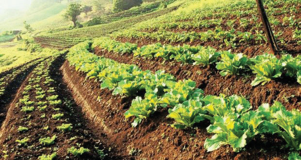

Water logging:
Water logging happens when too much water stays in the soil for a long time. When this happens, the air in the soil gets pushed out, making it hard for plant roots to breathe. To solve this, we can improve soil drainage by adding organic matter or creating channels to allow excess water to flow out.Leaching:
Leaching is when water washes away nutrients down the soil profile. This happens when it rains a lot or when we use irrigation. The nutrients are carried downwards in the soil, away from where the plant’s roots are. This means that the plant can’t get the nutrients it needs. This is a problem because plants need these nutrients to grow. To prevent this, we can use mulch or cover crops to slow down water movement and reduce nutrient loss. The lost nutrients should also be replaced by applying organic manure or inorganic fertilisers to the soil.Poor cultural practices:
These include burning of vegetation cover, crop removal through continuous cropping and grazing, using acid or alkali-forming fertilisers for a long time, and improper weed control methods.
(a)